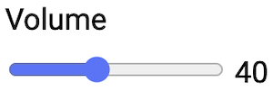

A quick explanation of aria-valuenow - looking at native and non-native controls.
1. Native control
Let's start with a normal HTML range input. This will help us understand what aria-valuenow is trying to achieve.
A range input is a UI control that allows users to move a handle along a bar to choose a value. It is commonly known as a slider.
It looks something like this, depending on the browser:

And the markup might look like this:
<label for="volume-select">Volume</label>
<input
type="range"
id="volume-select"
min="0"
max="100"
value="40"
>A native control like this comes with a lot of information and behaviour already built in.
The browser knows its name:
“Volume”
It knows its role:
“This is a slider.”
It knows the lowest possible value:
0
It knows the highest possible value:
100
And most importantly for this article, it knows the current value:
40
If the user moves the slider, the browser updates that value automatically.
For example, if the user presses the right arrow key and moves the slider from 40 to 41, the browser knows that the current value is now 41.
It can also pass that information to assistive technology, so a screen reader can announce the changing value as the user interacts with the control.
That is one of the big advantages of using a native HTML control: the browser already understands what the control is, how it behaves, and what its current value is.
2. Non-native control
Sometimes a native range input does not provide enough control over how the slider needs to look or behave.
For example:
- the browser may limit how much the slider track and handle can be styled
- the design may require a very different visual appearance
- the slider may need extra information, labels or markers along the track
- the slider may need more complex behaviour than a native range input provides
In these situations, a developer may choose to build their own slider using generic HTML elements, then add the necessary styles with CSS and behaviour with JavaScript.
The markup might start out looking something like this:
<div>Volume</div>
<div>
<div></div>
</div>Visually, it could be styled to look almost exactly like a slider.
But the browser does not automatically know:
- that this is a slider
- what its name is
- what its lowest possible value is
- what its highest possible value is
- what its current value is
- how the keyboard should interact with it
- what information should be passed to assistive technology
The developer now has to recreate those things.
3. Rebuilding the missing information
Let's start adding the information and behaviour that the native range input gave us automatically.
First, we need to tell the browser what kind of control this is:
<div
role="slider"
>
</div>The role="slider" tells assistive technologies:
“This is a slider.”
Next, the slider needs an accessible name. We can use the visible “Volume” text as its label:
<span id="volume-label">Volume</span>
<div
role="slider"
aria-labelledby="volume-label"
>
</div>Now the browser can understand both the control's name and role.
The slider also needs to be keyboard focusable. A normal <div> is not focusable by default, so we can add tabindex="0".
<div
role="slider"
aria-labelledby="volume-label"
tabindex="0"
>
</div>Next, we need to provide information about the slider's range. Our volume control goes from 0 to 100, so we can add:
<span id="volume-label">Volume</span>
<div
role="slider"
aria-labelledby="volume-label"
tabindex="0"
aria-valuemin="0"
aria-valuemax="100"
>
</div>The browser now knows:
- this is a slider
- its name is “Volume”
- its lowest possible value is 0
- its highest possible value is 100
But one important piece of information is still missing:
What is the slider's current value?
This is where aria-valuenow comes in.
4. So what does aria-valuenow do?
aria-valuenow tells assistive technology the current numeric value of a range control.
For our volume slider, the current value is 40:
<span id="volume-label">Volume</span>
<div
role="slider"
tabindex="0"
aria-labelledby="volume-label"
aria-valuemin="0"
aria-valuemax="100"
aria-valuenow="40"
>
</div>The aria-valuenow="40" basically means:
“The current value of this slider is 40.”
Now the browser has the important information about the slider's range and current value:
- the lowest possible value is 0
- the current value is 40
- the highest possible value is 100
If the user moves the slider, the visual position of the handle needs to change.
But because this is a custom slider, the developer also needs to update aria-valuenow at the same time.
For example, if the user presses the right arrow key and moves the slider from 40 to 41, JavaScript should change:
aria-valuenow="40"to:
aria-valuenow="41"That changing value is what tells assistive technology that the slider's current value has changed.
In the working example, the same JavaScript update keeps the visual slider position, the visible number and aria-valuenow in sync.
If a developer updates the visual slider position but forgets to also update aria-valuenow, the accessible value does not just go missing, it goes stale and wrong, silently telling screen reader users the value is still 40 long after it has actually moved to 75. That is a worse outcome than having no ARIA at all, since a confidently wrong value is harder to notice than an obviously missing one.
Takeaway
aria-valuenow does not move the slider or create the interaction. JavaScript provides the behaviour and updates the value.
aria-valuenow communicates the current numeric value of a range control to assistive technology.